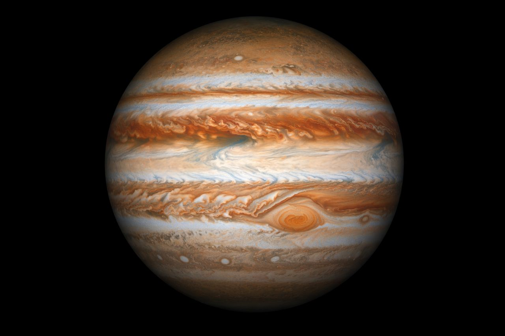

Sirius
Sirius est l'étoile la plus brillante visible à l'oeil nu depuis la Terre. Elle se situe dans la constellation du Grand Chien et fascine les astronomes depuis l'antiquité. Grâce à sa luminosité exceptionnelle, elle est facilement repérable dans le ciel nocturne et joue un rôle important dans l'observation du ciel.
Qu'est-ce que Sirius ?
Sirius est un système binaire composée de deux étoiles : Sirius A, une étoile principale très lumineuse, et Sirius B, une naine blanche. Ces deux étoiles tournent l'une autour de l'autre. Sa forte luminosité est due a sa taille, sa température élevée et sa relative proximité avec la Terre.
Où se situe-t-elle ?
Sirius se trouve dans la constellation du Grand Chien, visible principalement dans l'hémisphère nord durant l'hiver. Elle est située à environ 8,6 années-lumière de la Terre, ce qui en fait l'une des étoiles les plus proches de notre système solaire. Cette proximité explique pourquoi elle apparaît si brillante dans le ciel.
Pourquoi est-elle connue ?
Sirius est célèbre pour sa luminosité exceptionnelle. Elle a été utilisée par les anciennes civilisations pour marquer certaines périodes de l'année et reste aujourd'hui une étoile très étudiée.
Pour aller plus loin
Articles connexes

Planète
Mars: La planète rouge
Découvrez la planète rouge et ses caractéristiques uniques.
Lire l'article ➜
Planète
Jupiter: Le géant gazeux
Tout savoir sur la plus grosse planète du système solaire.
Lire l'article ➜